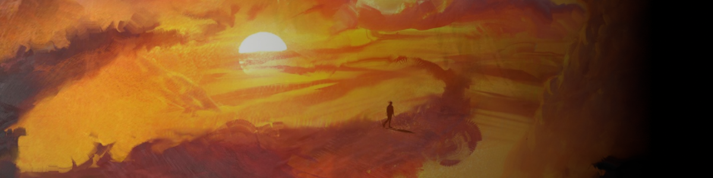

A Modern Classic
I came across Countless Skies on bandcamp. I do believe that this album popped up as a recommendation due to my prior purchases of other Melodic Death albums. As I listen to this album, I can make many comparisons to Devin Townsend and his brand of music. Layered song structures, soaring vocals and choruses, deep impactful growls in all the right places, and beautifully crafted melodies through out. Glow is a delight to listen too and stays in my album rotation to this day. Currently only one of two albums that I own two copies of in my physical collection, this says alot about how much I adore Glow by Countless Skies.
Check out the album on Bancamp hereRuntime: 43m 36s
